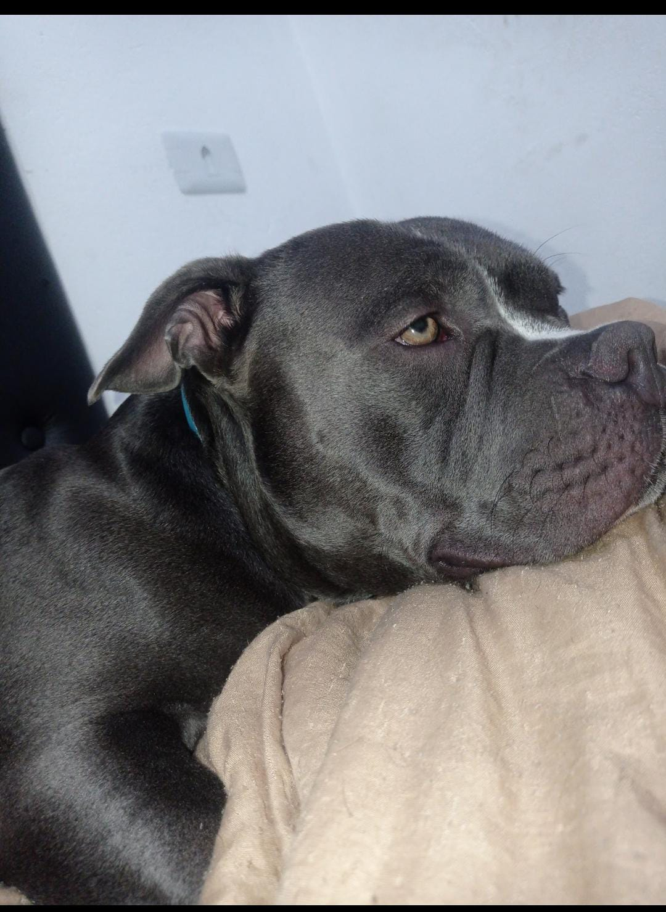
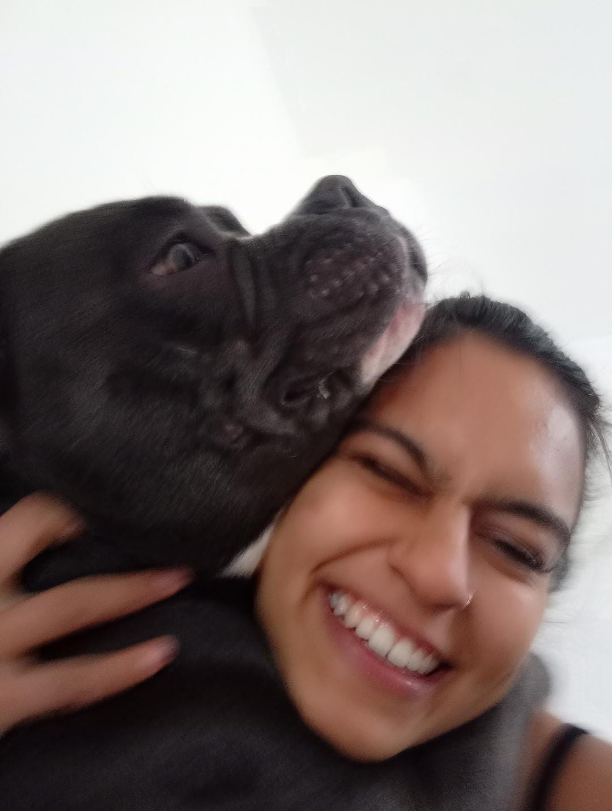
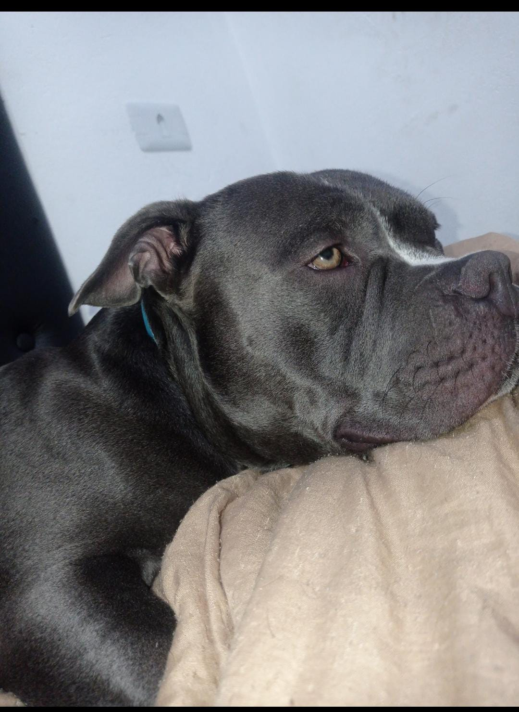
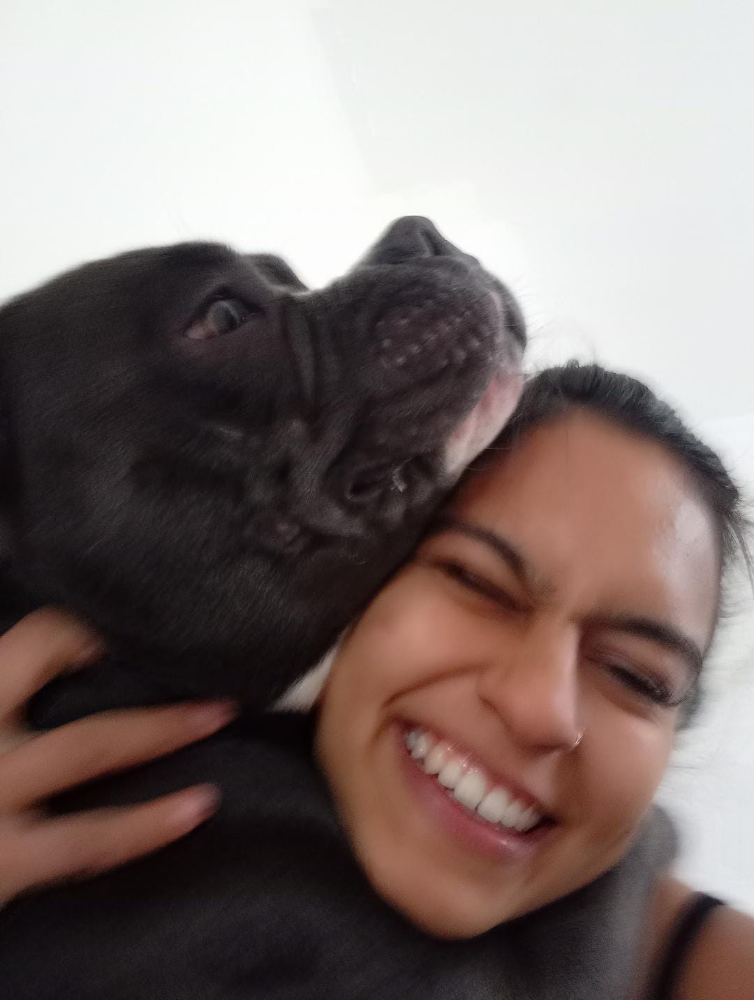

Origem
Segundo o UKC, em sua primeira versão do padrão, a raça surgiu entre o final da década de 1980 e início de 1990 nos Estados Unidos, a partir do cruzamento entre cães das raças American Staffordshire Terrier, Olde English Bulldogge, Pit Bull, Buldogue inglês e Buldogue americano.
O porque ter um
O American Bully tem a aparência forte, poderosa e até intimidadora, mas é um cão doce e amável. Fiel, obediente e companheiro, é um excelente animal para a família. Seu porte musculoso dá o charme especial. Um cãozinho de estrutura compacta e forte, o American Bully é uma raça amorosa e protetora. Sendo uma das diversas variações de Pitbulls, o cachorro se destaca por ser um grande atleta e muito leal ao seu dono. Assim, é um excelente cão de família e um pet muito amigável, mesmo com sua aparência robusta e poderosa.